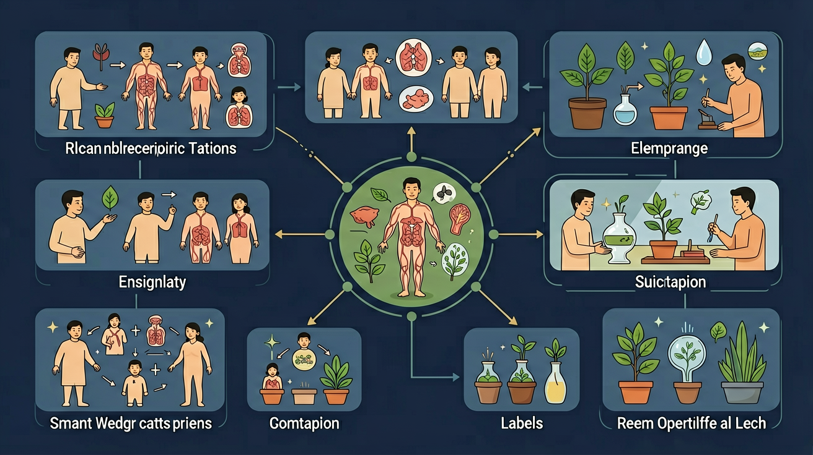
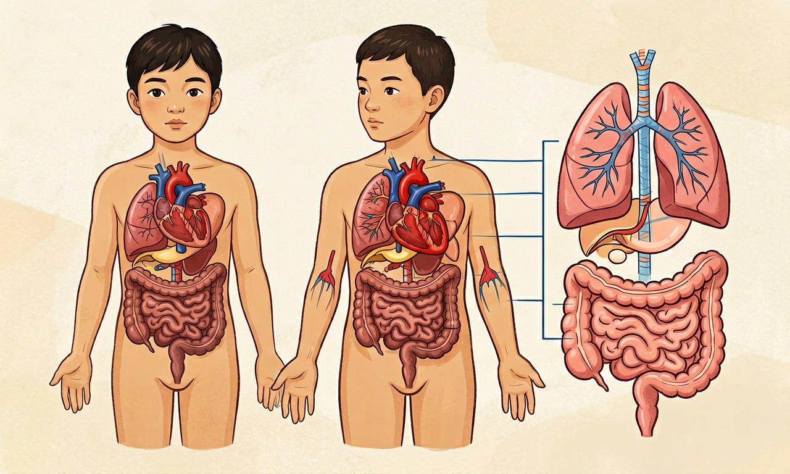
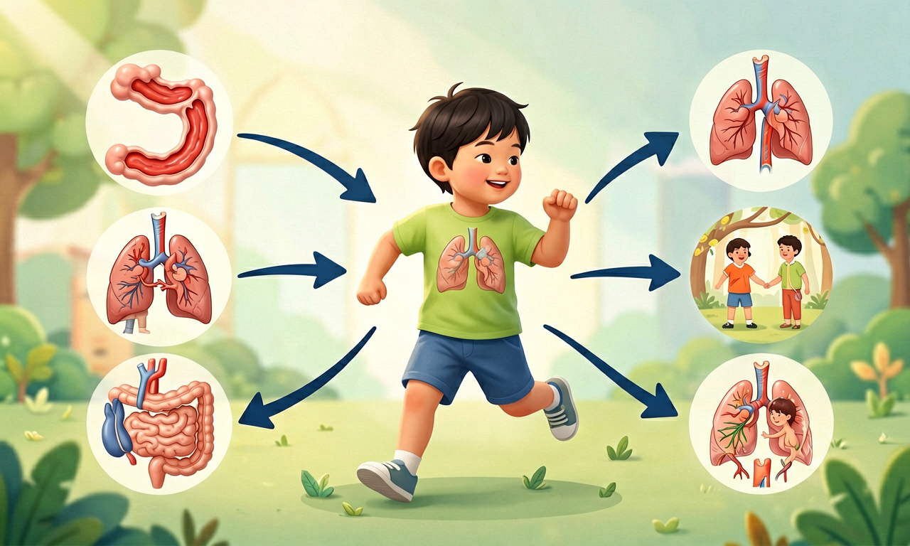

心脏、肺、胃、大脑……它们不是各自为战，而是组成消化、呼吸、循环、神经等系统，共同维持我们的生命活动。

选择或输入后，这节课会围绕你的问题展开。
我们吸入的氧气，主要是通过哪个器官进入血液、运送到全身？
先选一个，错了正好暴露你的前概念，我们一起纠正。
人体像一台精密的机器，由多个系统协同工作。消化系统（口、食道、胃、肠）负责分解食物、吸收营养；呼吸系统（鼻、气管、肺）负责吸入氧气、呼出废气；循环系统（心脏、血管、血液）负责运输物质；神经系统（大脑、脊髓、神经）负责感知和指挥；运动系统（骨骼、肌肉、关节）负责支撑和运动。
每个器官都有特定的结构来完成特定的功能。例如：胃壁会分泌消化液；肺里有大量肺泡增加气体交换面积；心脏像泵一样推动血液流动。

当你跑步时，运动系统让腿动起来；肌肉需要更多能量和氧气，所以呼吸加快（肺吸入更多氧气），心跳加快（心脏泵血更快），循环系统把氧气和营养送到肌肉，神经系统协调平衡和节奏。
保护人体系统要养成良好的习惯：均衡饮食（消化）、经常锻炼（运动与循环）、充足睡眠（神经）、不吸烟（呼吸）等。

把器官卡片拖到对应的人体系统区域。
拖完 6 个器官后自动判分。
解释题：吃完午饭后，你想去操场跑步。请从消化、呼吸、循环三个系统，说明身体会发生哪些变化、为什么。
提示：刚吃饱立刻剧烈运动，消化需要大量血液，运动也需要——可能「抢资源」导致不适。跑步时呼吸加快是为了多吸氧；心跳加快是为了把氧气和营养更快送到肌肉。
拓展题：为了保护呼吸系统，我们在日常生活中可以做哪三件事？
神经系统的主要功能是什么？
选一个并查看反馈。
迁移任务：观察一次自己从静止到快走的 1 分钟，记录呼吸和心跳的变化，并说明哪些系统在协作。